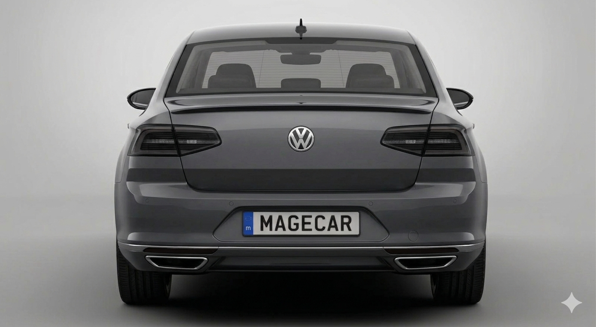
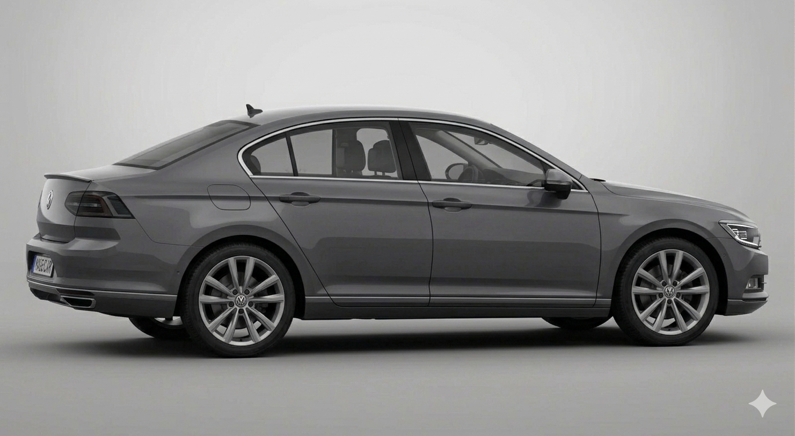
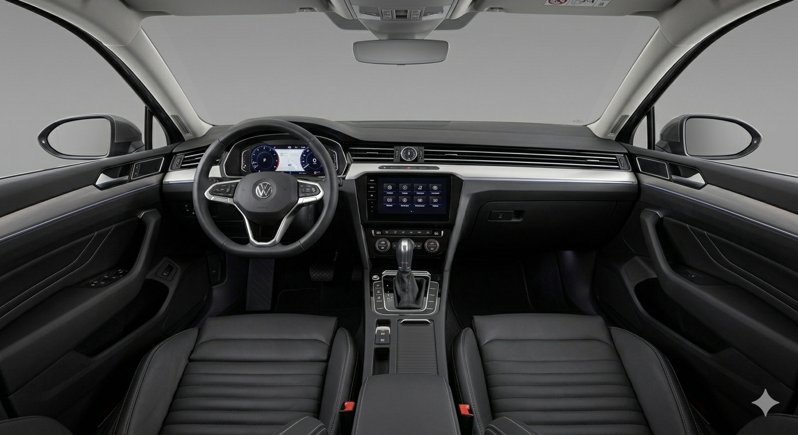

Volkswagen Passat VII 2.0 CR TDI
2 899 999 Ft
Éevjárat
2011/9
Km. óra állás
122 789 Km
Üzemanyag
Dízel
Teljesítmény
125kW, 170LE
Állapot
Újszerű
Csomagtartó
603 liter
A Volkswagen Passat B7 2.0 CR TDI egy tágas, kényelmes és megbízható középkategóriás autó, amely elsősorban hosszabb utakra és mindennapi használatra egyaránt kiváló választás. A Passat mindig is a praktikumról és a visszafogott eleganciáról szólt, a hetedik generáció pedig ezt tovább finomította modernebb technológiával és igényesebb kivitelezéssel. A 2.0 literes közös nyomócsöves (CR) TDI dízelmotor jó egyensúlyt kínál teljesítmény és fogyasztás között. Erőteljes nyomatéka miatt könnyedén mozgatja az autót, akár autópályán, akár városi forgalomban, miközben a fogyasztás kedvező marad. A motor kulturáltabb járású a korábbi PD TDI egységekhez képest, csendesebb működést és simább teljesítményleadást biztosít. A futómű komfortos hangolású, ami kiváló utazási élményt nyújt, különösen hosszabb távokon. Stabil útfekvése és kiszámítható viselkedése miatt biztonságos és nyugodt vezetést tesz lehetővé. A kormányzás pontos, bár inkább a kényelmet, mint a sportosságot helyezi előtérbe. A belső tér egyik legnagyobb erőssége az autó: tágas utastér, minőségi anyaghasználat és ergonomikus kialakítás jellemzi. Elöl és hátul is bőséges a hely, a csomagtartó pedig kategóriájában kiemelkedően nagy, így családi autónak vagy üzleti célokra is ideális. A felszereltségtől függően számos kényelmi és biztonsági extra is elérhető. Fenntartása általában ésszerű költségekkel jár, az alkatrészek széles körben elérhetők, és a típus jól ismert a szerelők körében. Megfelelő karbantartással hosszú távon is megbízható társ lehet. Összességében a Passat VII 2.0 CR TDI egy kiforrott, sokoldalú autó, amely a kényelmet, a gazdaságosságot és a praktikumot helyezi előtérbe, így kiváló választás mind családi, mind üzleti használatra.